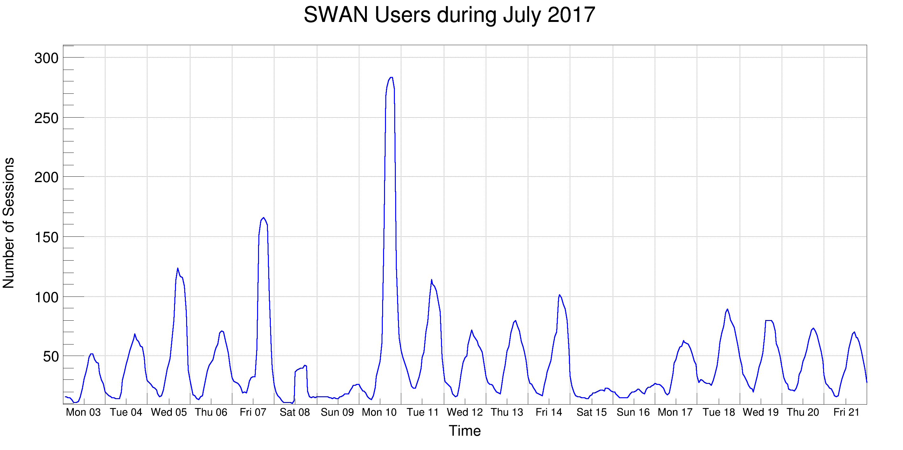

This macro illustrates the use of the time axis on a TGraph with data read from a text file containing the SWAN usage statistics during July 2017.
This macro illustrates the use of the time axis on a TGraph with data read from a text file containing the SWAN usage statistics during July 2017.

import ROOT
dirName = str(ROOT.gROOT.GetTutorialDir())
dirName += "/graphs/"
dirName= dirName.replace("/./", "/")
inputFileName = "%s/SWAN2017.dat" %dirName
g = ROOT.TGraph()
g.SetTitle("SWAN Users during July 2017;Time;Number of Sessions")
lines =
open(inputFileName,
"r").readlines()
for i, line in enumerate(lines):
d, h, value = line.split()
g.SetPoint(i, ROOT.TDatime("%s %s" %(d,h)).Convert(), float(value))
c = ROOT.TCanvas("c", "c", 950, 500)
c.SetLeftMargin(0.07)
c.SetRightMargin(0.04)
c.SetGrid()
g.SetLineWidth(3)
g.SetLineColor(ROOT.kBlue)
g.Draw("al")
g.GetYaxis().CenterTitle()
xaxis = g.GetXaxis()
xaxis.SetTimeDisplay(1)
xaxis.CenterTitle()
xaxis.SetTimeFormat("%a %d")
xaxis.SetTimeOffset(0)
xaxis.SetNdivisions(-219)
xaxis.SetLimits(ROOT.TDatime(2017, 7, 3, 0, 0, 0).Convert(), ROOT.TDatime(2017, 7, 22, 0, 0, 0).Convert())
xaxis.SetLabelSize(0.025)
xaxis.CenterLabels()
- Authors
- Danilo Piparo, Olivier Couet
Definition in file timeSeriesFromCSV.py.

 ROOT 6.18/03 - Reference Guide Generated on Thu Aug 29 2019 04:10:11 (GVA Time) using Doxygen 1.8.14.
ROOT 6.18/03 - Reference Guide Generated on Thu Aug 29 2019 04:10:11 (GVA Time) using Doxygen 1.8.14.